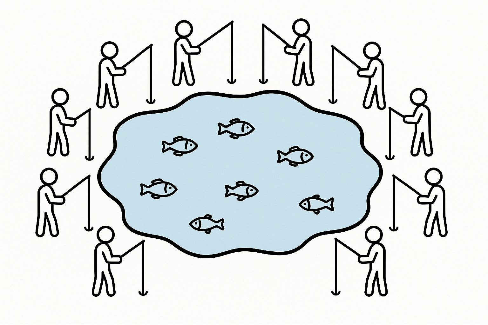

Tragedy of the Commons: When Individual Choices Create Collective Problems
Tragedy of the Commons is perhaps the most fundamental archetype we teach first when we introduce students to the field of systems thinking.
Tragedy of the Commons demonstrates how individual rational decisions can lead to collective irrationality and system collapse. The Tragedy of the Commons archetype helps you understand shared resource depletion, environmental issues, and organizational challenges where individual incentives conflict with group benefits.
Introduction
Imagine you're at your favorite fishing spot on a beautiful lake. The fishing is so good that you catch your limit every time you visit. You tell your friends about the lake and many of them also join you fishing on the lake.
But over the months, you notice something troubling: the fish are getting smaller, and it's taking longer to catch anything. Other anglers are reporting the same problem.
What's happening to this once-abundant lake? Perhaps there are too many people catching fish on a small lake. The lake has become over fished. The smaller fish are being caught before they have a chance to grow up and spawn more fish.
Welcome to one of the most important patterns in systems thinking: the Tragedy of the Commons. This archetype shows us how perfectly rational individual decisions can lead to outcomes that nobody wants—not even the people making those decisions.
What Is the Tragedy of the Commons?
The Tragedy of the Commons is a system archetype that occurs when multiple people or organizations share a limited resource, and each actor acts in their own self-interest without considering the collective impact. The "tragedy" isn't that people are being selfish or evil—it's that even when everyone acts rationally, the end result can be devastating for everyone involved.
Here's the basic pattern:
- Multiple individuals access a shared, limited resource
- Each person benefits from using more of the resource
- The costs of overuse are shared by everyone, but the benefits go to individuals
- Over time, the resource becomes depleted or degraded
- Everyone ends up worse off than when they started

The Structure Behind the Pattern
Understanding why this happens requires looking at the underlying structure of incentives and feedback loops. Let's break down the key elements:
Individual Benefits vs. Collective Costs
In a commons situation, when you use more of the resource, you get all the benefits, but you only bear a small fraction of the costs. For example, if you're one of 100 fishers on a lake and you catch an extra fish, you get 100% of the value from that fish, but you only contribute 1% to the depletion of the fish population.
This creates what economists call a "negative externality" —the true cost of your action is partly paid by others.
The Reinforcing Loop
The Tragedy of the Commons contains a powerful reinforcing loop that accelerates the problem:
[Insert Causal Loop Diagram Here]
The causal loop diagram should show: Individual Resource Use → Short-term Individual Benefits → More Individual Resource Use → Total Resource Consumption → Resource Depletion → Scarcity → Competitive Pressure → Individual Resource Use (completing the loop). Include polarity markers and a reinforcing loop indicator.
As resources become scarcer, the competitive pressure increases. People think, "I'd better get mine before it's all gone," which accelerates the depletion even faster.
Missing Feedback
One crucial element that makes this archetype so dangerous is the absence of immediate feedback. When you take one more fish from the ocean or drive your car one more day, you don't immediately see the impact on the global commons. The effects are: - Delayed: The consequences show up much later - Diluted: Your individual impact seems tiny - Distant: The effects might happen far from where you are
Real-World Examples
Ocean Fisheries: The Perfect Storm
Commercial fishing provides a textbook example of the Tragedy of the Commons in action. Here's how it unfolds:
The Setup: Ocean fish populations are a shared resource. No single country or company owns the fish, but everyone can benefit from catching them.
The Individual Logic: Each fishing fleet thinks, "If we don't catch these fish, someone else will. We might as well benefit from this resource."
The Collective Result: - Global fish catches peaked in the 1990s and have declined since - Over 30% of fish stocks are overfished - Some fish populations have collapsed to less than 10% of their historical levels - Entire fishing communities have lost their livelihoods
The Tragedy: Even though every fishing captain knew that overfishing was a problem, no individual captain had an incentive to fish less, because their individual restraint wouldn't save the fish population but would hurt their business.
[Suggest Figure: Graph showing global fish catch over time, peaking and then declining]
Antibiotic Resistance: A Modern Commons Crisis
Antibiotics represent a global commons that we're rapidly depleting:
The Resource: The effectiveness of antibiotics depends on bacteria not developing resistance. Every time antibiotics are used, there's a small chance resistant bacteria will develop.
Individual Incentive: When you're sick, taking antibiotics provides immediate personal benefit. When doctors prescribe antibiotics, they help their current patient.
Collective Cost: Each use of antibiotics slightly increases the overall level of antibiotic resistance in bacterial populations worldwide.
The Tragedy: Today, antibiotic-resistant infections kill hundreds of thousands of people annually, and we're facing the prospect of a "post-antibiotic era" where common infections become deadly again.
Social Media and Attention
Even our attention spans can be seen as a commons:
The Resource: Human attention and the quality of public discourse.
Individual Incentive: Content creators benefit from posting sensational, emotionally charged content that grabs attention.
Collective Cost: The overall quality of information and civil discourse degrades as sensational content crowds out thoughtful, nuanced communication.
The Tragedy: We end up with information environments that make everyone more anxious, polarized, and less informed, even though no individual creator intended this outcome.
Why Smart People Fall Into This Trap
It's important to understand that the Tragedy of the Commons doesn't happen because people are stupid or evil. Even highly intelligent, well-intentioned people can get caught in this pattern because:
- Rational Individual Choice: From any individual's perspective, using more of the resource makes perfect sense
- The Free Rider Problem: If others aren't restraining themselves, your personal restraint won't save the commons but will hurt you
- Delayed Feedback: The consequences of overuse often don't show up until it's too late to reverse course
- Diffused Responsibility: With many people involved, no one feels personally responsible for the outcome
Interactive Exploration
To really understand how this archetype works, try this interactive simulation: Tragedy of the Commons Simulator
In this simulation, you can: - Control how much of the resource your "agent" consumes - See how other agents in the system behave - Watch what happens to the shared resource over time - Experiment with different strategies and see their outcomes
Reflection Questions for the Simulation: - What happens when everyone tries to maximize their individual gain? - What happens when you try to be conservative while others are aggressive? - Can you find strategies that work for both individuals and the collective?
The Broader Pattern
The Tragedy of the Commons shows up everywhere because it reflects a fundamental challenge in human cooperation: aligning individual incentives with collective well-being. You can see this pattern in:
- Environmental Issues: Climate change, pollution, deforestation
- Urban Planning: Traffic congestion, parking, public space
- Workplace Dynamics: Shared resources, meeting rooms, common equipment
- Digital Environments: Spam, online harassment, information overload
- Economic Systems: Market bubbles, financial crises
Looking Ahead
Understanding the Tragedy of the Commons is crucial for systems thinkers because:
- Recognition: Once you understand this pattern, you'll start seeing it everywhere
- Prevention: Knowing the structure helps you design systems that avoid this trap
- Intervention: Understanding the dynamics shows you where to intervene when you're already in a commons crisis
In our next section, we'll explore strategies for preventing and solving commons problems—because while the tragedy is common, it's not inevitable. There are proven ways to manage shared resources successfully, and understanding them is key to building sustainable systems.
[Suggest Figure: Preview diagram showing potential solutions - regulation, privatization, community management, and technological solutions]
Key Takeaways
- The Tragedy of the Commons occurs when individual rationality leads to collective irrationality
- The pattern is driven by a reinforcing loop where scarcity increases competitive pressure
- Missing or delayed feedback makes the problem worse
- This isn't about bad people—even good people can get trapped in this structure
- Understanding the pattern is the first step toward designing better systems
The next time you're in a situation involving shared resources—whether it's a group project, a family chore system, or a global environmental challenge—ask yourself: "Are we setting up a Tragedy of the Commons here? And if so, how can we design our way out of it?"